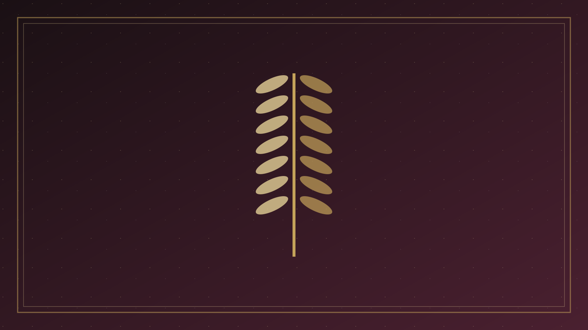
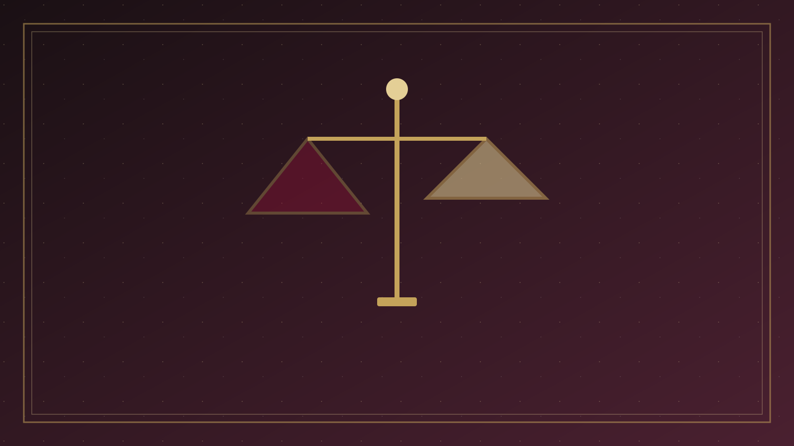
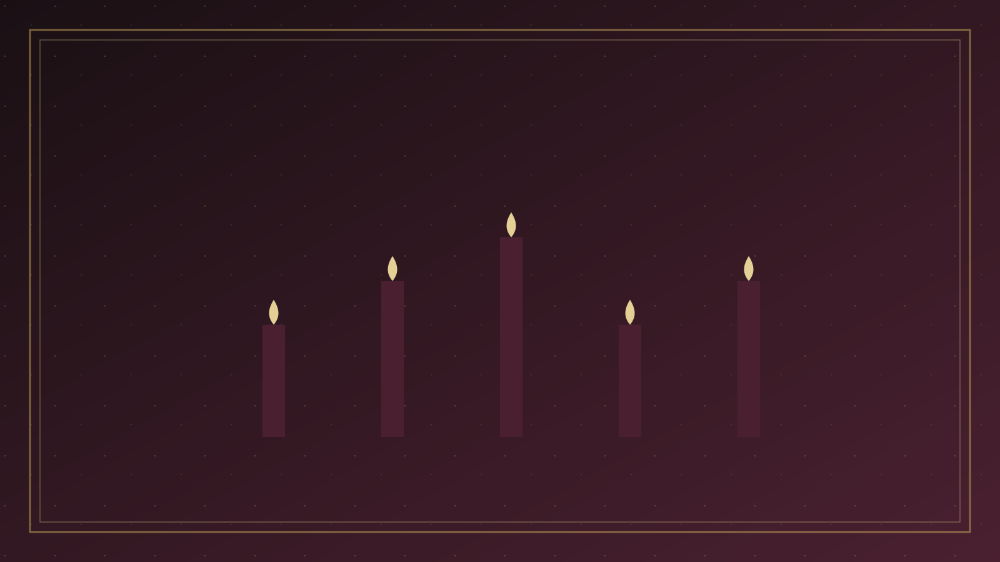
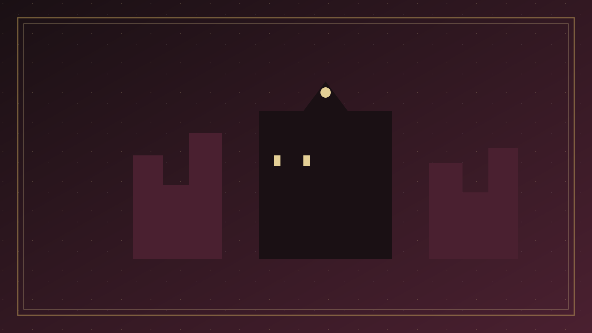
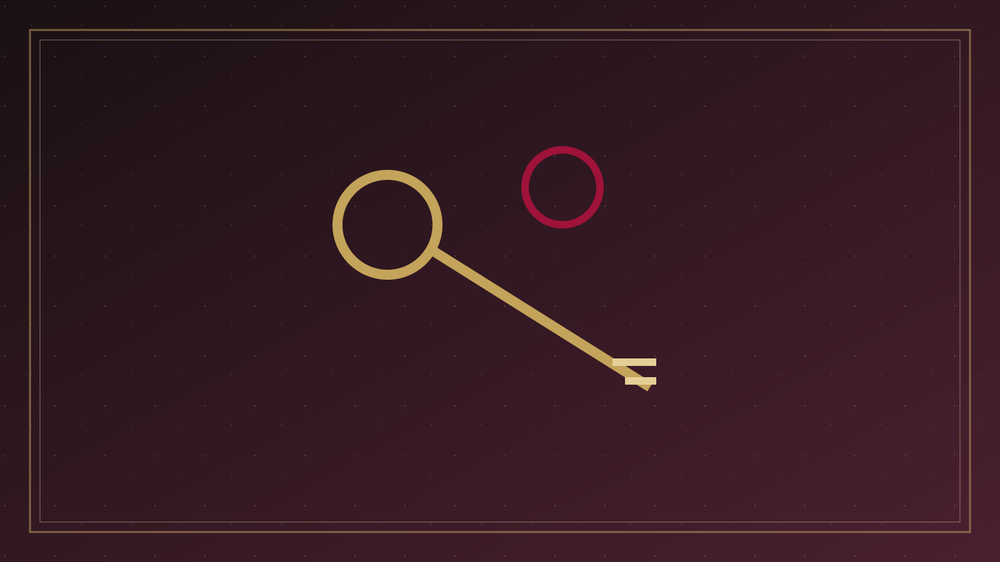

專論總覽
假先知、另一個福音，與使徒對基督的見證
本篇已按原有標題拆成可獨立閱讀的分題。請選一題進入；正文未經改寫，只把長頁分開。

01
問題意識
一、問題意識：所信的基督是否真基督 「異端」在今日華語裡，往往變成一句情緒詞：誰跟我不一樣，誰就是異端。

02
假先知與警戒
二、舊約：假先知——神蹟也不能蓋過對耶和華的忠誠 以色列從一開始就必須分辨：誰是奉耶和華的名說話，誰是擅自說話，誰是領人去隨從別神。
- 舊約假先知
- 耶穌的警戒
03
使徒行傳與保羅
四、使徒行傳：把恩賜當商品，把律法功德加在福音上 路加沒有寫抽象的異端論，他寫案例。
- 使徒行傳
- 另一個福音

04
檢驗真道
六、約翰、彼得與猶大：成了肉身的基督，與一次交付的真道 敵基督：不認耶穌是成了肉身來的 約翰把末時的標誌，從時間表拉回認信：「如今是末時了。
- 約翰彼得猶大
- 辨認核心

05
古代異端
八、古代／大公會議所拒的主要異端：基督教內部的教義史 這一節處理的，是教會在讀同一本聖經時，對基督、三一與救恩走偏、後來被大公認信所拒的教導。

06
近現代團體
九、近現代自稱基督教、卻更換福音或基督的主要團體 第七節已點名若干教義特徵。

07
分辨與牧養
十、異端、錯謬、不平衡與罪：不要用同一把火燒盡田地 真教會裡也會有錯誤教導。
- 錯謬與異端
- 牧養